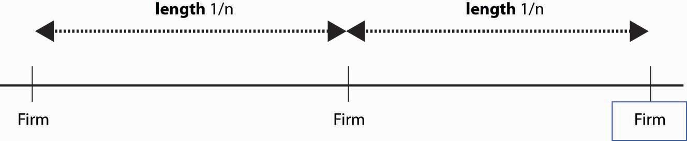

In the circle modelA Hotelling model set on a circle., a Hotelling model is set on a circle. There are n firms evenly spaced around the circle whose circumference is 1. Thus, the distance between any firm and each of its closest neighbors is 1/n. Consumers care about two things: how distant the firm they buy from is and how much they pay for the good. Consumers minimize the sum of the price paid and t times the distance between the consumer’s location (also on the circle) and the firm. Each consumer’s preference is uniformly distributed around the circle. The locations of firms are illustrated in Figure 17.3 "A Segment of the Circle Model".
Figure 17.3 A Segment of the Circle Model
We conjecture a Nash equilibrium in which all firms charge the price p. To identify p, we look for what p must be to make any one firm choose to charge p, given that the others all charge p. So suppose the firm in the middle of Figure 17.3 "A Segment of the Circle Model" charges an alternate price r, but every other firm charges p. A consumer who is x units away from the firm pays the price r + tx from buying at the firm, or p + t(1/n – x) from buying from the rival. The consumer feels indifferent toward the nearby firms if these are equal, that is, r + tx* = p + t(1/n – x*) where x* is the location of the consumer who is indifferent.
Thus, consumers who are closer than x* to the firm charging r buy from that firm, and consumers who are further away than x* buy from the alternative firm. Demand for the firm charging r is twice x* (because the firm sells to both sides), so profits are price minus marginal cost times two x*; that is,
The first-order conditionBecause profit is quadratic in r, we will find a global maximum. for profit maximization is
We could solve the first-order condition for r. But remember that the question is, when does p represent a Nash equilibrium price? The price p is an equilibrium price if the firm wants to choose r = p. Thus, we can conclude that p is a Nash equilibrium price when
This value of p ensures that a firm facing rivals who charge p also chooses to charge p. Thus, in the Hotelling model, price exceeds marginal cost by an amount equal to the value of the average distance between the firms because the average distance is 1/n and the value to a consumer for traveling that distance is t. The profit level of each firm is so industry profits are
How many firms will enter the market? Suppose the fixed cost is F. We are going to take a slightly unusual approach and assume that the number of firms can adjust in a continuous fashion, in which case the number of firms is determined by the zero profit condition or
What is the socially efficient number of firms? The socially efficient number of firms minimizes the total costs, which are the sum of the transportation costs and the fixed costs. With n firms, the average distance a consumer travels is
Thus, the socially efficient number of firms minimizes the transport costs plus the entry costs This occurs at The socially efficient number of firms is half the number of firms that enter with free entry.
Too many firms enter in the Hotelling circle model. This extra entry arises because efficient entry is determined by the cost of entry and the average distance of consumers, while prices are determined by the marginal distance of consumers, or the distance of the marginal consumer. That is, competing firms’ prices are determined by the most distant customer, and that leads to prices that are too high relative to the efficient level; free entry then drives net profits to zero only when it is excess entry.
The Hotelling model is sometimes used to justify an assertion that firms will advertise too much, or engage in too much research and development (R&D), as a means of differentiating themselves and creating profits.